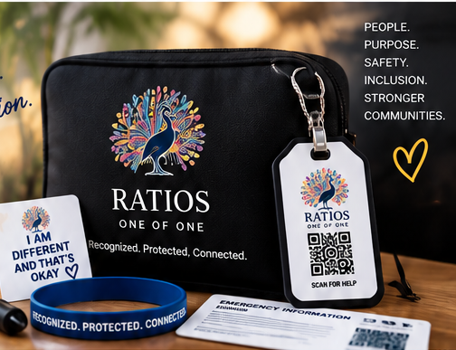
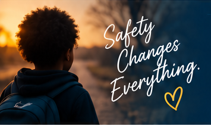
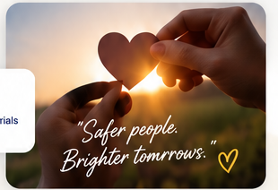

SAFETY KITS
Prepared People
Build Stronger
Communities.
RATIOS Safety Kits are designed to help individuals, families, and caregivers prepare for emergencies, stay connected, and increase safety for loved ones with developmental, cognitive, intellectual, and communication disabilities.
♢More Safety
♟Greater
Independence
Independence
♡Stronger
Communities
Communities
◆Peace of Mind
Small Tools:
Big Protection. ♡
Big Protection. ♡

WHAT'S INSIDE
Safety Kit Contents
Each kit includes essential tools and resources to help caregivers prepare,
respond, and keep their loved ones safe.
identification card
communication form
description template
& sensory needs section
or printed resources
action checklist

HOW IT HELPS
More Than a Kit —
It’s Peace of Mind.
Our Safety Kits provide practical support that can make a critical difference during an emergency. They help first responders, caregivers, and community members quickly access important information, reduce stress, and improve outcomes for individuals and families.
▣ Helps individuals be recognized and understood
♟ Supports caregivers with ready-to-use resources
♢ Builds confidence in emergency situations
♡ Promotes inclusion, independence, and safety
SUPPORT OUR MISSION
Put a Safety Kit
in a Family’s Hands.
Your support helps provide safety tools to families who may not otherwise have access. Every contribution makes a direct impact in creating safer, more inclusive communities.

WHO WE SERVE
Safety Kits are helpful for:
🧩Autism
🎗Down syndrome
🧠Intellectual
disabilities
disabilities
◉Developmental
disabilities
disabilities
💬Communication
disabilities
disabilities
♟Families &
caregivers
caregivers
🏫Schools &
educators
educators
♢First responders
& professionals
& professionals
●Community
organizations
organizations